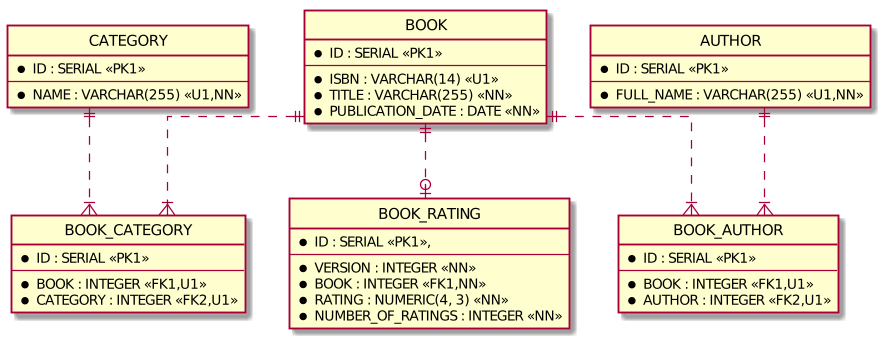

Spring Data R2DBC Examples
The example evaluates Spring Data R2DBC as an alternative to Spring Data JPA and Spring Data JDBC.
Spring Data R2DBC uses Reactive Relational Database Connectivity, a reactive programming APIs to relational databases. In contrast to the blocking nature of JDBC, R2DBC is non-blocking and has a reactive API. Spring Data R2DBC used together with Spring WebFlux allows to develop fully-reactive and non-blocking applications.
Prerequisites
- JDK 11
- Docker at least 1.6.0
How to run tests
To build project and run all tests use command
./gradlew cleanTest test -i
Implementation details
- JDK 11
- Spring Boot 2.2.x
- Spring Data Release Train Neumann-RC1
- Spring Data R2DBC 1.1.0.RC1
- MapStruct 1.3.1.Final
- JUnit 5
- Testcontainers
This example has a simple domain model. A book has at least one author and belongs to at least one category. A book can be rated. An average rating and a total number of ratings are tracked.
Spring Data R2DBC concept is to be a simple and easy to use object mapper and does NOT provide many features of ORM.
One-to-one, one-to-many and many-to-many relationships are not supported.
Thus, in contrast to JPA, relationships must be modeled by referencing the ID and join tables for many-to-many relationships must be mapped to a Java class.
UML class diagram

Entity-relationship diagram

Test cases
- Queries -
com.example.spring.data.r2dbc.BookRepositoryTest CrudRepository.findById- Query method with
Sort @Querywith SQL and pagination- Mapping from entity to DTO using MapStruct